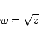

Inhalt Index DeskTop Bronstein

 Funktionentheorie Funktionen einer komplexen Veränderlichen Konforme Abbildung Einfachste konforme Abbildungen
Funktionentheorie Funktionen einer komplexen Veränderlichen Konforme Abbildung Einfachste konforme Abbildungen


Die konforme Abbildung
|  | (14.15) |
in der Form der Quadratwurzel aus z überführt die gesamte z-Ebene entweder in die obere oder untere Halbebene der w-Ebene, d.h., die Funktion ist doppeldeutig. Die Koordinaten der w-Ebene gehen aus zwei zueinander orthogonalen Scharen konfokaler Parabeln mit dem Brennpunkt im Nullpunkt der z-Ebene und mit der positiven bzw. negativen reellen Koordinatenhalbachse als Achse hervor (s. Abbildung).
Fixpunkte der Abbildung sind z = 0 und z = 1. Im Punkt z = 0 ist die Abbildung nicht konform.